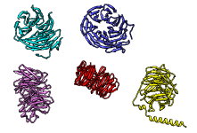

Superimposing Structures
|  |
 |
There are several ways to superimpose structures in Chimera:
- MatchMaker
(or command matchmaker)
performs a fit after automatically identifying which residues should be paired.
Pairing uses both sequence and secondary structure,
allowing similar structures to be superimposed
even when their sequence similarity is low to undetectable.
The figure shows five distantly related proteins
(pairwise sequence identities < 25%)
from the SCOP WD40 superfamily before and after MatchMaker
superposition with default parameters.
Except for manual matching, the methods allow iterative exclusion of
poorly superimposed atoms from the fit.
For the special case of an ensemble, which contains multiple
sets of coordinates for exactly the same atoms, see also
Ensemble
Match.
A multiple sequence alignment can be generated from a set of superimposed
structures using
Match
-> Align.
See also:
matrixcopy,
measure rotation,
rmsd
MatchMaker vs. Match
Usually
MatchMaker
(or command matchmaker) provides the
easier route to superimposing related proteins or nucleic acids.
Unlike match,
it does not require the user to specify which atoms should be used.
On the other hand, it:
- takes more time due to the sequence alignment step
(determining residue pairing)
- offers less control over which atoms are used for fitting: always uses
one
point per residue
- recomputes protein secondary structure assignments;
this promotes consistency in assignments between structures and can improve
how they are superimposed, but the
option to reassign
secondary structure should be turned off
if one would rather use the assignments in the input files
Of course, match would be the
preferred method for superimposing sets of atoms representing
known local similarities within globally dissimilar structures
such as proteins of different folds.
UCSF Computer Graphics Laboratory / January 2009